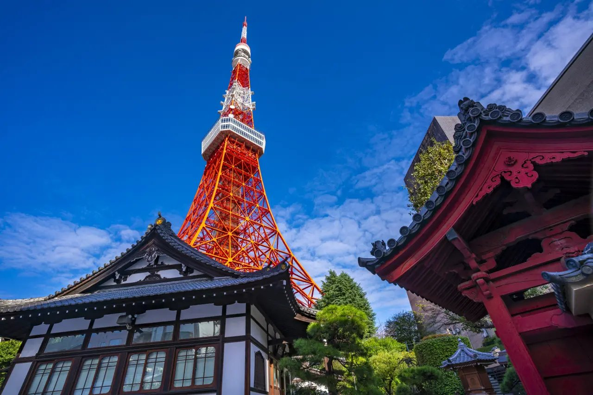

JAPAN / AUTUMN JOURNAL
東京，
慢慢走。
把喜歡的風景，收進這一趟旅行。
東京・川崎，六天的秋日記憶。
2026.11.03 — 11.08

東京 / TOKYO 35°39′N 139°45′E＋ 自行新增行程
免 Apple Developer 帳號。搜尋會另開 Apple 地圖；找到地點後，開啟地點卡片，按「分享」並複製連結，再貼到下方。新增內容保存在此瀏覽器，不會同步到其他裝置。
在 Apple 地圖搜尋 ↗每個行程可上移、下移或刪除，調整自動保存在目前瀏覽器。